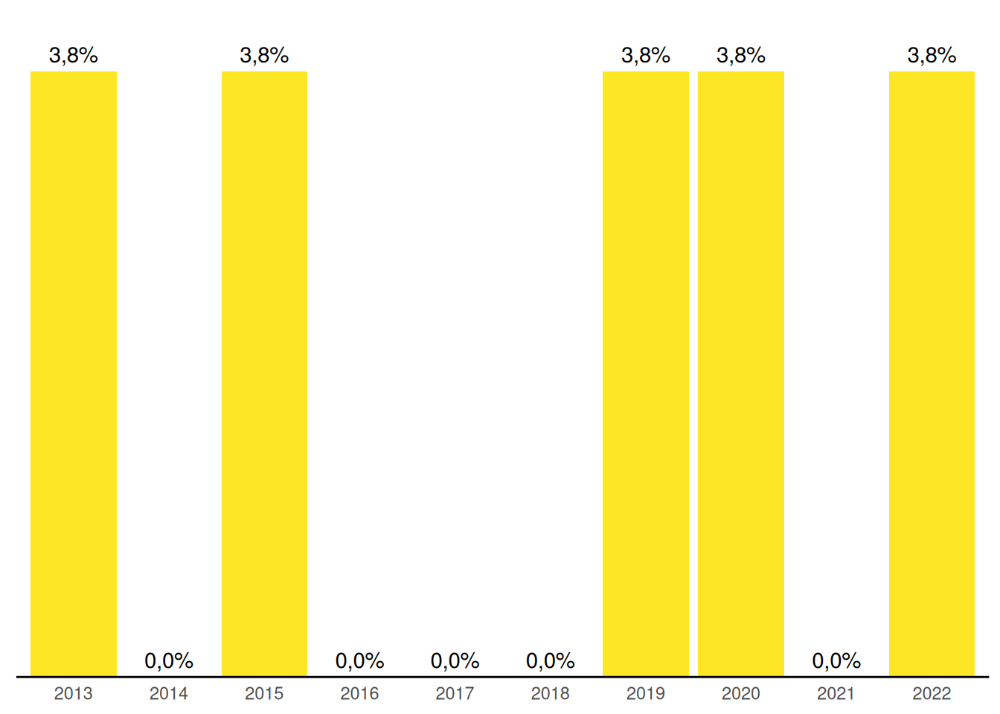

5 Gestão do Trabalho e Recursos Humanos no SUAS
A qualidade da oferta de serviços, programas e benefícios da assistência social está diretamente ligada a uma adequada gestão do trabalho no âmbito do SUAS. O dimensionamento das equipes, a capacitação dos profissionais e a estruturação das condições de trabalho são fundamentais nesse sentido. Um importante normativo para a gestão do trabalho é Norma Operacional Básica de Recursos Humanos do SUAS (NOB-RH/SUAS), que traz orientações e diretrizes, além de detalhamentos importantes sobre as equipes de referência, planos de carreira, cargos e salários, cofinanciamento, educação permanente, entre outros aspectos relevantes. A NOB SUAS 2012 em seu capítulo VIII também descreve sobre a Gestão do Trabalho no SUAS no âmbito da União, dos Estados, do Distrito Federal e dos Municípios. 1
Este capítulo apresenta um panorama geral da situação das trabalhadoras e trabalhadores do SUAS, tanto nos equipamentos da assistência social quanto nas gestões municipais e estaduais, apresentando informações sobre quantitativo, tipo de vínculo trabalhista, escolaridade, entre outros aspectos referentes à gestão do trabalho, e sua evolução ao longo dos anos.
5.1 Evolução na quantidade de trabalhadoras/es, tipo de vínculo e escolaridade no orgão gestor
A quantidade de trabalhadoras/es nas Secretarias Estaduais de Assistência Social nacionalmente em 20182 era de 3.988 profissionais, considerando trabalhadoras/es lotadas/os na sede do órgão gestor. Esse quantitativo teve aumento 7%, em 2022 passou a ter 4.265 conforme pode ser observado no Gráfico 5.1.
A quantidade de trabalhadoras/es nas Secretarias Municipais de Assistência Social em 20183 era de 51.135 profissionais, considerando trabalhadoras/es lotados na sede do órgão gestor. Esse quantitativo aumento 4%, em 2022 passou a ter 56.381 conforme pode ser observado no Gráfico 5.2.
O Gráfico 5.3 traz dados sobre o tipo de vínculo dos trabalhadores e trabalhadoras das Secretarias Estaduais de Assistência Social. Observa-se uma redução das/os servidoras/es estatutárias/os e empregadas/os públicos (CLT). O percentual de Servidoras/es caem de 54% no ano de 2012 para 46% em 2022. Enquanto empregadas/os públicas/os reduzem de 16% em 2012 para 3,3% em 2022. Houve aumento de cargos comissionados 10 pontos percentuais, de 19% em 2012 para 29% em 2022.
Os percentuais de trabalhadoras/es segundo tipo de vínculo pode ser observados no Gráfico 5.4. A quantidade proporcional de estatutários na gestão municipal representavam 36% em 2013,4 observa-se um aumento no ano de 2017 e retoma ao patamar de 36% em 2022.
Neste mesmo gráfico, também é possível observar, em 2022, queda nos números de empregados públicos – CLT (5%) e outros com vínculos não permanentes (29%). O único aumento registrado foi 14 pontos percentuais no quadro de comissionados (31%).
Quanto a escolaridade das/os trabalhadoras/es das Secretarias Estaduais de Assistência Social observa-se um aumento significativo dos profissionais de nível superior com avanço de 32% em 2012 para 63% em 2022. Em relação reduz o número proporção de profissionais de nível fundamental e médio. A soma deste grupo representava 68% em 2012 e chega em 2022 com 37,2% conforme pode ser analisada através do Gráfico 5.5.
O Gráfico 5.6 mostra a evolução do número de trabalhadoras/es de nível superior, ele avança de 36% para 52% no período de 2013 5 a 2022. Em relação a propoção de profissionais de nível médio e fundamental, há uma redução ao longo deste período com 6,3 pontos percentuais para de nível fundamental e 10 pontos percentuais para profissionais de nível médio. Assim, o Censo SUAS de 2022 sinaliza que, do total de trabalhadoras/es na gestão municipal, há 39% de nível fundamental e 8,7% de nível médio. Demais 52%, correspondem a profissionais de nível superior.6.
Das/os trabalhadoras/es das Secretarias Estaduais de Assistência Social que informaram sua formação superior em 2022, destaca-se a maior presença de profissionais de serviços social com 24%, após identifica-se a proporção de profissionais de psicologia com 8,2%. O maior número de profissionais são identificados em outras profissões ou não informado.7
5.2 Evolução da quantidade de trabalhadoras/es nas Unidades do SUAS
O Artigo 6º da Lei Orgânica de Assistência Social (LOAS) estabelece que os recursos do cofinanciamento do SUAS poderão ser aplicados no pagamento dos profissionais que integrarem as equipes de referência. Os dados do Censo SUAS 2022 sinalizam um total de 145.861 trabalhadoras/es sendo 115.149 nos CRAS, 27.084 nos CREAS e 36.628 nos Centro POP.
O Gráfico 5.9 mostra um aumento na quantidade de trabalhadoras/es nas unidades socioassistenciais no período de 2012 a 2022. Essa evolução neste período representa 69% nos CRAS, 36% nos CREAS, 122% no Centro POP.
.
5.3 Gestão do trabalho: Concurso público
A gestão do trabalho no SUAS compreende desenhos organizativos, avaliação de desempenho, adequação de perfis profissionais às necessidades das areas administrativas, mesas de negociação, plano de carreira e previsão de consursos públicos.
Em relação à realização de concursos públicos pelos entes estaduais, o Gráfico 5.10 mostra a linha histórica quanto a realização de concurso para trabalhadoras/es de nível superior do SUAS. Por pelos menos 5 anos neste período, nenhum estado realizadou concurso para nível superior no SUAS.

Em relação aos municipaios, a maior realização de concurso público municipal para trabalhadoras/es de nível superior se deu nos anos de 2013 (27%) e 2015 (17%). Este dado mostra os desafios da gestão do trabalho. O Gráfico 5.11 referencia a linha histórica dos últimos 10 anos.

5.4 Considerações Finais
Em relação a quantidade de trabalhadoras/es do SUAS no âmbito da gestão estadual e municipal, observa-se que do período de 2018 a 2022, houve aumento nesta quantidade em nível nacional. Para as gestões estaduais o aumento foi de 7% e gestões municipais foi de 4%. Entretanto, destaca-se que, neste mesmo período, as Regiões Sudeste e Sul tiveram redução no número de trabalhadoras/es nas gestões estaduais e, no âmbito das gestões municipais, a Região Nordeste teve redução na quantidade de trabalhadoras/es. No âmbito das unidades socioassistenciais, sobretudo CRAS, CREAS e Centro POP, observa-se um aumento nos dados nacionais da rede socioassistencial. Em relação ao vínculo destes trabalhadoras/es, nas gestões estaduais houve uma redução das/os servidoras/es estatutários e empregadas/os públicas/os (CLT) e aumento no número de cargos comissionados e outros vínculos não permanentes. Nas gestões municipais, os dados sinalizam para redução da quantidade de servidoras/es estatutários, empregadas/os públicas/os (CLT) e outros vínculos não permanentes. No que se refere a escolaridade das/os trabalhadoras/es das gestões, observa-se no geral um aumento da proporção de trabalhadoras/es de nível superior. Em relação a profissão, Assistentes Sociais e psicólogos são proporcionalmente a maioria para ambos os entes. Por fim, os dados também sinalizam desafios para gestão do trabalho, sobretudo no que se refere a realização de concursos públicos
acesso através:https://www.mds.gov.br/webarquivos/public/NOBSUAS_2012.pdf↩︎
gráfico a partir do ano de 2018 em decorrência de mudanças na modalidade de respostas↩︎
gráfico a partir do ano de 2018 em decorrência de mudanças na modalidade de respostas↩︎
não foi possível gerar este gráficos para os anos de 2012 e 2020 em decorrência de problemas na leitura da base de dados do Censo SUAS↩︎
não foi possível gerar este gráficos para os anos de 2012 e 2020 em decorrência de problemas na leitura da base de dados do Censo SUAS↩︎
não foi possível gerar este gráficos para os anos de 2012 e 2020 em decorrência de problemas na geração dos dados↩︎
O número elevado da categoria de “outro profissional não informado” se deve a soma na base de dados nas informações de outros profissionais de nível superior a profissionais “sem formação profissional”. Entretanto, pela relevância desta informação mantemos o gráfico.↩︎